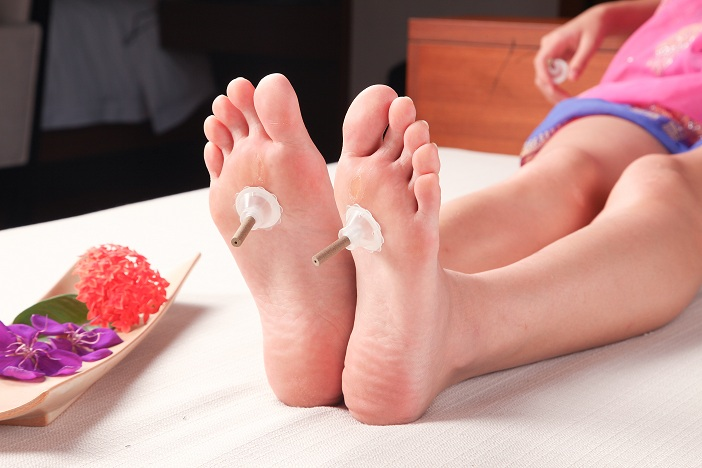
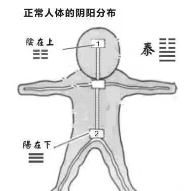
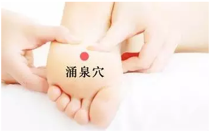

随着养生知识的普及，艾灸保健已成为大家茶余饭后的谈资。很多人有些小毛病，自己便在家随手拿起一根艾条，随便灸灸倒也见效。

但也有些人艾灸则不同，一灸便上火。其实，很多时候，艾灸看似简单也蕴含着大道理，比如艾灸至阴穴转胎效果好，但也有些情况比如脐带绕颈则禁灸。因此，没有医学知识的人，平时艾灸强身健体还行，如若治病还要在老师的指导下。
今天，我们谈谈手脚冰凉的朋友，一灸就上火，怎么办？
正常人的标准是什么？
我们先来了解什么样的状态才是一个正常的人？

阴在上，阳在下。阳气上升，阴气下降，从而达到“上阴下阳”阴阳相交之象，尤如晴朗的天空一样，天上风轻云淡，地面绿树成荫。
人亦如此，上阴下阳，元阳充足，头目清醒，人就充满了活力。
但是由于咱们现在的生活状态，长期处于激进状态，导致阳气持续滞留在人体上焦，下焦阳气不足；
气脉流通不畅，从而造成“上阳下阴”阴阳不相往来的否象，继而各种各样的毛病便层出不穷。
如何引火归源？
那如何才能让持续滞留在上焦的阳气，转移至下焦呢？
清·罗东逸《内经薄议·足少阴肾藏病论》中的“水暖而龙潜，水寒而龙起”也是很好的解释。这是一种拟人化的思考，浸于与人体体温相同的暖水中自然最舒服，水太热或太寒均为所恶。
所以，扶阳抑阴来治浮火，以罗氏的解释为：“水暖而龙潜”。其实，以补阳来治龙火之患，其实在《伤寒论》中早就应用了。
中医如何理解引火归源？
补火为什么能引火归源？很多人对此表示十分不理解。
来，咱们用物理学解释一下。
万有引力是由于物体所具的质量而在物体之间产生的一种相互作用。物体的质量越大，它们之间的引力就越大；物体之间的距离越远，它们之间的引力就越小。
这就是为什么质量小的天体都绕着质量大的天体做有规律的天体运动，就如月亮绕着地球转，地球绕着太阳转一样。
地球把大气、人类和所有地面物体束缚在其上的道理也一样。
火是炎上、外散的，一般来说，人体上部、外部的阳气更多，对下部、内部的阳气本就容易形成一个引力优势。
如果阳虚在下或内，这种引力优势就更明显了，于是虚阳易受上部、外部阳气的吸引，而上浮或外越，形成内真寒外假热或下真寒上假热的阳虚阳浮证。
因此，补肾火就类似增加下部、内部的阳气质量，以增强其与上部、外部阳气抗衡的力量。
甚至肾阳充沛的情况下还可形成自身的引力优势，使上部、外部的阳下沉、内蕴，为己所用，而成上阴下阳的泰卦，这就是引火归源。
艾灸哪里引火归源？
艾灸涌泉能引火归源，很多人也难以理解，明明是增加了人体的总热量，何以反能治疗一些有上热或兴奋症状，如高血压、失眠、焦躁等病症？
《灵枢·本输》有：“肾出于涌泉，涌泉者足心也。”涌泉为人身诸穴的最下方，少阴又为人身六经之最里。
张隐菴注：“地下之水泉，天一之所生也。故少阴所出，名曰涌泉。”足少阴为肾经，主水，五行中水居最下，此犹天一之水由至下涌出。
涌泉穴在哪里？就在我们脚底前1/3的凹陷处。

如果涌泉穴温暖，人体至阴部位得阳而充，阳气充足则引力增大，上部的阳被引就下而归源。
火一归源，犹如地下的水泉被蒸动，则肾经之气如源泉之水，涌出而灌注周身，气行则水行，真正地做到了水津四布。
所以艾灸涌泉常能让人产生满口甘津，这是人体水泉上涌的征兆，也是火降水升，上下交泰的佳征。
推搓涌泉穴由摩擦而产生热感也有这样的效，所以“搓脚心”也成为流传已久的自我养生保健法。
注意
※ 一般的保健艾灸，当以温为度，而不是以热为度。至于治病就当以病情轻重为衡了，如伤寒病之回阳，以足心转热为好转之断。
※ 艾灸涌泉也应有度，如果以保健来说，时间过长或温度过热也会产生上火状况，以15分钟为度，大家可以根据自己的艾灸后的状态来进行调整，多体会与操作，找到适合自己的时长。
原文出处：http://aiyijiu.github.io/article/210.html 更多艾灸资讯尽在艾易灸灸网！